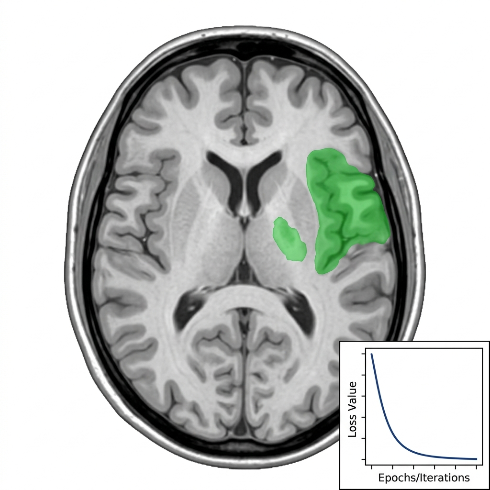

Researcher at IIT Bombay KCDH & UCSF Department of Medicine
I got into machine learning research through the medical domain: starting with medical reasoning in language models, then moving into uncertainty quantification for clinical NLP, and eventually into computer vision for stroke segmentation, where I designed a novel mathematical loss function that became my undergraduate thesis.
Alongside this, I started working with Dr. Vivek Rudrapatna at UCSF on applying reinforcement learning to sparse medical data -specifically drug repurposing from electronic health records. That work is pushing me toward what I'm most interested in now: non-rewardable RL for language models and studying consciousness in recursive language models.
My research interests sit at the intersection of Psychology, Mathematics, and Machine Learning. I'm drawn to problems like implicit rewards (Non-rewardable RL) through Epiplexity & consciousness in reasoning through Recursive Language Model.
I am also interested in exploring other areas, for the sake of "Serendipity" in my Research, - currently I am interested in Scientific Computing & Mathematical Biology (Dynamical Modelling).

| May 2026 | Undergraduate thesis defended -"What Dice Misses": Size Penalty Loss |
| Apr 2026 | Began visiting research at UCSF, USA with Dr. Vivek Rudrapatna |
| Jan 2026 | Exchange semester at IIT Bombay, Koita Centre for Digital Health |
| Aug 2025 | Started research at IIT Bombay with Dr. Kshitij Jadhav |
| May 2025 | Research internship at IIT Jodhpur with Dr. Sucharita Dey |
| Feb 2025 | Best Poster Presenter -CME Immunology, Institute of Advanced Research |
| Mar 2024 | Best Poster Presenter -Annual Research and Innovation Conclave (ARIC) |
| 2024 | 3rd place -Gujarat Government Healthcare Hackathon |
Interested in collaborating, have research questions, or just want to chat? Drop me a message.